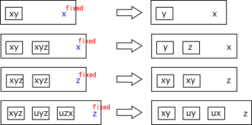
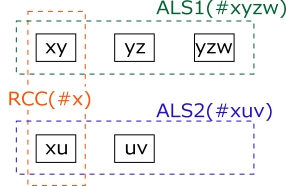
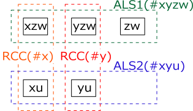

ALS
In Sudoku's advanced solution, ALS (Almost Locked Set) is used.
ALS
LockedSet is a state where there are n candidate numbers in n cells belonging to the same house. Cells and numbers are not determined one-on-one, but they are in the Locked state as a whole. ALS is "Locked" state with n+1 candidate numbers in n cells belonging to the same house. ALS becomes LockedSet if the number is fixed outside ALS and the number is removed from ALS. This alone does not hold as a solution, but it can make various analysis algorithms in combination with something. The smallest ALS is 1 cell 2 candidate fnumbers.

RCC
The analysis algorithms involving two ALSs take advantage of the Restricted Common Candidate(RCC).
In the following figure there are two ALSs (blue and green dashed boxes) and when they satisfy the condition
"there are numbers common to the two ALSs without overlap and they are in the same house",
that The numbers are called RCC (Restricted Common Candidate).
(Orange dotted frame is different from ALS house)
As RCC belongs to the same house, RCC is in only one ALS and the other ALS does not contain RCC numerals,
however, not decided which ALS it is.
When some condition is added and RCC becomes true in one ALS, In the other ALS it is false.
In false ALS, n candidate number are in n cells and ALS becomes Locked Set.

The following figure shows a case where there are two RCCs between two ALSs (doubly linked).
RCC is only for one ALS. In the case of doublylinked, the two RCCs are not offset to one ALS.
There is one for each of the two ALSs.
However, it do not decide which RCC is in which ALS.

ALS-RCC-ALS is called a link of ALS connected by RCC,
and it can connect ALS-RCC-ALS successively and make a series of ALS.
ALS Class(UALS)
i prepared ALS class(UALS) which handles ALS with analysis algorithm.
The elements are a collection(UCellLst) of ALS configuration cells,
a cell number(Size), a house number(tfx,0-27), element numbers(FreeB)
ALS level (Level,=|FreeB|-|cells|), bit representation of ALS row/column/block(rcbDir).
Bit representation of rows/columns/blocks((rcbDir) is defined by properties.
Besides this, I have some work variables to use when generating ALS chain.
The constructor defines elements of ALS and generates a bit representation of ALS row/column/block
and a bit representation of the ALS configuration cell.
CompareTo and function for display are prepared as functions.
public class UALS: IComparable{
static public Bit81[] pHouseCells{ get{ return AnalyzerBaseV2.HouseCells; } }
static public Bit81[] pConnectedCells{ get{ return AnalyzerBaseV2.ConnectedCells; } }
public int ID;
public readonly int Size; //CellsSize
public readonly int tfx; //House number
public readonly int FreeB; //ALS element digits
public readonly int Level; //FreeDigit-CellsSize
public readonly List<UCell> UCellLst = new List<UCell>(); //ALS Cells
public bool singly; //true:ALS configuration is the only(First registration of the same configuration)
public int rcbDir; //bit representation of ALS
public int rcbRow{ get{ return (rcbDir&0x1FF); } } //row representation
public int rcbCol{ get{ return ((rcbDir>>9)&0x1FF); } } //column representation
public int rcbBlk{ get{ return ((rcbDir>>18)&0x1FF); } }//block representation
public Bit81 B81; //ALS representation
//working variable//(used in ALSChain)
public bool LimitF=false;
public List<UALSPair> ConnLst;
public List<int> LockedNoDir;
public Bit81 rcbFilter;
public UALS( int ID, int Size, int tfx, int FreeB, List<UCell> UCellLst ){
this.ID = ID;
this.Size = Size;
this.tfx = tfx;
this.singly = true;
this.FreeB = FreeB;
this.Level = FreeB.BitCount()-Size;
this.B81 = new Bit81();
this.rcbFilter = new Bit81();
this.UCellLst = UCellLst;
this.LockedNoDir = null;
UCellLst.ForEach( P =>{
rcbDir |= ( (1<<(P.b+18)) | (1<<(P.c+9)) | (1<<(P.r)) );
rcbFilter |= pConnectedCells[P.rc];
B81.BPSet(P.rc);
} );
}
public override int GetHashCode(){ return (B81.GetHashCode() ^ FreeB*18401 ); }
public int CompareTo( object obj ){
UALS UB = obj as UALS;
if( this.Level!=UB.Level ) return (this.Level-UB.Level);
if( this.Size!=UB.Size ) return (this.Size-UB.Size);
if( this.tfx!=UB.tfx ) return (this.tfx-UB.tfx);
return (this.ID-UB.ID);
}
public UGrCells SelectNoCells( int no ){
int noB=1<<no;
List<UCell> UCsS = UCellLst.FindAll(Q=>(Q.FreeB&noB)>0);
UGrCells GCs = new UGrCells(tfx,no);
GCs.Add(UCsS);
return GCs;
}
public bool IsPureALS(){
if( Size<=2 ) return true;
for( int sz=2; sz<Size-1; sz++ ){
var cmb=new Combination(Size,sz);
while(cmb.Successor()){
int fb=0;
for( int k=0; k<sz; k++ ) fb |= UCellLst[cmb.Cmb[k]].FreeB;
if( fb.BitCount()==sz ) return false;
}
}
return true;
}
public override string ToString(){
string po = "<> UALS "+ID+" <> tfx:"+tfx +" Size:"+Size +" Level:"+Level;
po += " NoB:" + FreeB.ToBitString(9) + "\r"
po += " B81 "+B81+"\r"
for( int k=0; k<UCellLst.Count; k++){
po += "------";
int rcW = UCellLst[k].rc;
po += " rc:" + ((rcW/9+1)*10+(rcW%9+1)).ToString();
po += " FreeB:" + UCellLst[k].FreeB.ToBitString(9);
po += " rcb:B" + (rcbBlk).ToBitString(9);
po += " c" + rcbCol.ToBitString(9);
po += " r" + rcbRow.ToBitString(9);
po += " rcbFilter:" + rcbFilter.ToString();
po += "\r"
}
return po;
}
public string ToStringRCN(){
string st=""
UCellLst.ForEach( p =>{ st += " r"+(p.r+1) + "c"+((p.c)+1); } );
st = st.ToString_SameHouseComp()+" {#"+FreeB.ToBitStringN(9)+"}";
return st;
}
public string ToStringRC(){
string st=""
UCellLst.ForEach( p =>{ st += " r"+(p.r+1) + "c"+((p.c)+1); } );
st = st.ToString_SameHouseComp();
return st;
}
}
ALS Manegiment Class(ALSMan)
In the analysis algorithm, we use class (ALSMan) that manages ALS management and ALS operation functions.
The elements of ALSMan are only two external references and ALS collections.
The function ALS_Search scans the board for ALS collection.
Use nPls of the argument to find the ALS level 1 to nPls .
In the latest GNPX, i use ";ALSLinkMan" which extends ";ALSMan".
public class ALSMan{
private GNPZ_Analyzer pSA;
private List<UCell> pBDL;
public List<UALS> ALSLst;
public ALSMan( GNPZ_Analyzer pSA ){
this.pSA = pSA;
UALS.pSA = pSA;
}
public int ALS_Search( int nPls ){
if( ALSLst!=null ) return ALSLst.Count();
this.pBDL = pSA.pBDL;
UALS.pBDL = pSA.pBDL;
int ALSSizeMax = GNumPzl.ALSSizeMax;
int mx=0;
ALSLst = new List<UALS>();
for( int nn=1; nn<=nPls; nn++ ){
for( int tf=0; tf<27; tf++ ){
List<UCell> P=pBDL.IEGet(tf,0x1FF).ToList();
if( P.Count<1 ) continue;
int szMax = Math.Min(P.Count,8-nn);
szMax = Math.Min(szMax,ALSSizeMax); //Limit ALS size maximum value
for( int sz=1; sz<=szMax; sz++ ){
Combination cmb = new Combination(P.Count,sz);
while( cmb.Successor() ){
int FreeB=0;
Array.ForEach(cmb.Cmb, q=> FreeB|=P[q].FreeB );
if( FreeB.BitCount()!=(sz+nn) ) continue;
List<UCell> Q=new List<UCell>();
Array.ForEach(cmb.Cmb, q=> Q.Add(P[q]) );
//Check for the existence of ALS with the same configuration(T:First F:second or later)
UALS UA=new UALS(mx,sz,tf,FreeB,Q);
int hs= UA.GetHashCode();
if( singlyMan.Count>0 && singlyMan.Contains(hs) ) UA.singler=false;
singlyMan.Add(hs);
mx++;
ALSLst.Add(UA);
}
}
}
}
ALSLst.Sort();
int ID=0;
ALSLst.ForEach(P=> P.ID=ID++ );
//ALSLst.ForEach(P=>Console.WriteLine(P));
return ALSLst.Count();
}
public int GetALSRCC( UALS UA, UALS UB ){
if( (UA.FreeB&UB.FreeB)==0 ) return 0; //No common number
if( !(UA.B81&UB.B81).IsZero() ) return 0; //Overlap
if( (UA.rcbFilter&UB.B81).IsZero() ) return 0; //No contact
int RCC=0, Dir=UA.rcbDir&UB.rcbDir;
//rcbDir |= ( (1<<(P.b+18)) | (1<<(P.c+9)) | (1<<(P.r)) );
foreach( int tfx in Dir.IEGet_BtoNo(27) ){
Bit81 ComH = pSA.HouseCells[tfx];
int FrAi=0, FrAo=0, FrBi=0, FrBo=0;
UA.UCellLst.ForEach(P=>{
if( ComH.IsHit(P.rc) ) FrAi |= P.FreeB;
else FrAo |= P.FreeB;
} );
UB.UCellLst.ForEach(P=>{
if( ComH.IsHit(P.rc) ) FrBi |= P.FreeB;
else FrBo |= P.FreeB;
} );
RCC |= (FrAi.DifSet(FrAo)) & (FrBi.DifSet(FrBo)); //RCC
}
return RCC;
}
public void Create_ALS2ALS_Link( bool doubly ){
var cmb = new Combination( ALSLst.Count, 2 );
while (cmb.Successor()) {
UALS UA = ALSLst[cmb.Cmb[0]];
UALS UB = ALSLst[cmb.Cmb[1]];
int RCC = GetALSRCC( UA, UB );
if( RCC==0 ) continue;
if( !doubly && RCC.BitCount()!=1 ) continue;
if( UA.ConnLst==null ) UA.ConnLst=new List<LinkAlsAls>();
if( UB.ConnLst==null ) UB.ConnLst=new List<LinkAlsAls>();
foreach( var no in RCC.IEGet_BtoNo() ){ //
LinkAlsAls LKX=new LinkAlsAls(UA,UB,RCC,no);
if( !UA.ConnLst.Contains(LKX) ) UA.ConnLst.Add(LKX);
LKX=new LinkAlsAls(UB,UA,RCC,no);
if( !UB.ConnLst.Contains(LKX) ) UB.ConnLst.Add(LKX);
}
}
}
}